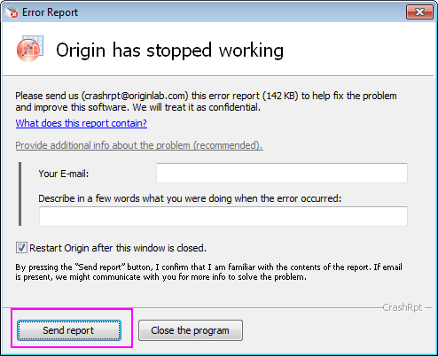

FAQ-20 Was soll ich tun, wenn mein Origin abstürzt oder einfriert?
troubleshooting-Origin-crash
Letztes Update: 04.02.2024
Wenn Ihr Origin abstürzt, einfriert, nicht mehr reagiert oder Dialog sich nicht mehr öffnen, beheben folgende Maßnahmen möglicherweise den Fehler. Diese Lösungen sollen in der Reihenfolge verwendet werden, in der sie hier angegeben sind. Wenn Sie eine dieser Lösungen anwenden und sie nicht zum Erfolg führt, lesen Sie den nächsten Abschnitt.
 | Wenn Ihr Origin abstürzt oder einfriert -- etwas passiert ist, das Sie vom Speichern Ihres Projekts gehindert hat --, können Sie den größten Teil Ihrer Arbeit vielleicht wiederherstellen, wenn Sie Origins Funktion der automatischen Speicherung eingeschaltet haben. Lesen Sie Einzelheiten in dieser FAQ. |
Schritt 1: Absturzbericht über den Dialog Fehlerbericht senden
Wenn Sie Origin Version 9.1 oder höher besitzen, können Sie den Absturzbericht direkt nach dem Absturz senden. OriginLab untersucht die Einzelheiten und bleibt mit Ihnen diesbezüglich in Kontakt, wenn Sie Ihre E-Mail-Adresse hinterlassen haben. Um den Absturzbericht an den technischen Support zu senden, klicken Sie auf die Schaltfläche Bericht senden, wenn dieser Dialog angezeigt wird:
- 
| Hinweise: Beachten Sie, dass Sie, sollten Sie den Absturzbericht nicht direkt senden können, auf den Link Was enthält dieser Bericht (What does this report contain) klicken und die Details des Absturzberichts als Zip-Datei exportieren sowie diese inklusive beliebiger zusätzlicher Informationen später per E-Mail an uns schicken können. |
Wenn Ihnen der Dialog des Absturzberichts nicht angezeigt wird, fahren Sie mit Schritt 2 fort.
Schritt 2: Debug-Informationen senden
Wenn Ihr Origin einfriert, hängen bleibt oder abstürzt ohne den Dialog Fehlerbericht anzuzeigen, können Sie uns die Debug-Informationen mit Hilfe der untenstehenden Schritte zusenden.
Minidump
Dies ist eine empfohlene Methode, die uns dabei helfen kann herauszufinden, was in Ihrem Origin schiefgegangen ist.
Erstellen Sie eine Minidump-Datei und senden Sie sie uns mit Hilfe der untenstehenden Schritte.
- Laden Sie den ProcessExplorer herunter (ein erweiterter Task Manager von Microsoft) unter
- http://technet.microsoft.com/en-us/sysinternals/bb896653.aspx
- Starten Sie Origin und führen Sie die Schritte durch, die das Problem demonstrieren.
- Extrahieren Sie das in Schritt 1 heruntergeladene Hilfsmittel und führen Sie procexp.exe aus.
- Klicken Sie in dem geöffneten Dialog mit der rechten Maustaste auf die EXE-Datei von Origin und wählen Sie im Kontextmenü Dump erstellen > Minidump erstellen.
- Es wird eine *.dmp-Datei gespeichert. Senden Sie uns diese zu.
Debug-Protokoll
Wenn Sie geprüft haben, dass die Minidump-Datei nicht hilft, können Sie uns das Debug-Protokoll zusenden. Dazu befolgen Sie die untenstehenden Schritte.
- Starten Sie Origin.
- Wählen Sie Fenster: Skriptfenster, um das Skriptfenster zu öffnen.
- Geben Sie Folgendes in das Skriptfenster ein und drücken Sie die Enter-Taste:
@log=1
- Die Datei Origin_Log.txt und ihr Speicherort werden im Skriptfenster ausgegeben. Notieren Sie sich diese Informationen.
- Schließen Sie Origin und starten Sie Origin erneut, um das Erzeugen der Debug-Protokolldatei anzustoßen.
- Führen Sie die Schritte durch, die das Problem demonstrieren.
- Senden Sie uns die Debug-Protokolldatei.
- Wenn das Protokollieren mit @log aktiviert worden ist, kann es sich automatisch deaktivieren, nachdem Sie Origin mehr als 5-mal verwendet haben.
|
Zusätzliche Hinweise:
- In Origin 2019 und älteren Versionen:
- Zum Ausschalten des Protokollierens führen Sie das Skript
debug_log 2 aus und der Speicherort der Protokolldatei wird im Skriptfenster ausgegeben.
- Um das Erzeugen der Debug-Protokolldatei zu deaktivieren, führen Sie folgendes Skript aus:
debug_log 0
- Der Befehl debug_log 2 aktiviert das Protokollieren und bewahrt etwa 2 MB Daten zwischen den Sitzungen auf.
- Um das Protokollieren und das Neuschreiben der Protokolldatei bei jedem Start von Origin zu aktivieren, verwenden Sie stattdessen debug_log 1.
- Um den aktuellen Status des Protokollierens anzuzeigen und den Namen der Debug-Protokolldatei und den Speicherort zu suchen, verwenden Sie debug_log.
|
Wenn Sie keinen totalen Absturz erlebt haben, aber Origin trotzdem nicht normal ausführen können, gehen Sie zu Schritt 3.
Schritt 3: DLLs modifizieren
Wenn Origin nach dem Start abstürzt, kann dies durch alte oder unpassende MS DLLs verursacht werden. Bitte befolgen Sie die untenstehenden Schritte.
- Geben Sie im Suchfeld auf der Taskleiste von Windows Systemsteuerung ein und wählen Sie sie aus den Ergebnissen.
- Wählen Sie Programme > Programme und Funktionen.
- Suchen Sie entsprechend der von Ihnen genutzten Origin-Version die erforderlichen MS Redistributables in der untenstehenden Tabelle. Normalerweise werden Sie als Microsoft Visual C++ xxxx Redistributable xxxxxxxx bezeichnet.
- Falls eine erforderliche DLL gefunden wird, klicken Sie mit der rechten Maustaste auf sie und wählen Sie im Kontextmenü Deinstallieren. Falls Sie dazu aufgefordert werden, starten Sie den PC neu.
Hinweis: Eventuell hatten Sie zuvor eine erforderliche DLL installiert, aber eine andere Version. Wenn Sie zum Beispiel VS 2015-2019, 14.0 installiert hatten, Origin aber VS 2015-2019, 14.2 benötigt, könnte dies zu dem Problem "DLL fehlt" führen, auch wenn Sie dachten, dass Sie es "bereits installiert" hatten. Wir schlagen daher immer vor, dass die gefundene DLL deinstalliert und erneut installiert wird (siehe nächster Schritt).
- Laden Sie alle DLL-Installer, die für Ihre Origin-Version erforderlich sind, von dieser Seite herunter und installieren Sie sie erneut:
- Wenn Sie fertig sind, starten Sie Ihren PC neu, um die Änderungen wirksam werden zu lassen.
- Testen Sie Origin jetzt erneut (Origin ggf. als Administrator ausführen).
Sollte dies nicht funktionieren, machen Sie weiter mit Schritt 4.
Schritt 4: Den Standarddrucker ändern
Es gibt einige Berichte über Konflikte mit HP-Druckertreibern, die sich häufig folgendermaßen zeigten:
- Der Dialog Details Zeichnung wird nicht geöffnet oder braucht dazu viele Minuten.
- Der Code Builder wird nicht geöffnet oder braucht dazu viele Minuten.
Wenn da bei Ihnen passiert, ändern Sie Ihren Druckertreiber in einen anderen lokalen Standarddrucker und starten Sie Origin erneut.
Sollte dies nicht funktionieren, machen Sie weiter mit Schritt 5.
Schritt 5: Softwarekonflikt prüfen
Prüfen Sie, ob einen Softwarekonflikt zwischen Origin und einer anderen Anwendung gibt (wie GamePP).
- Falls ja, schließen Sie bitte die andere Software und versuchen Sie erneut, mit Origin zu arbeiten.
- Wenn Sie nicht sicher sind, ob es einen Konflikt mit der Software gibt, versuchen Sie bitte Folgendes:
- Starten Sie Ihren Computer neu. Führen Sie keine andere Softwares aus.
- Starten Sie Origin. Stellen Sie fest, ob es einen Absturz gibt.
- Sollte es einen Absturz geben, erweitern Sie die Taskleiste (unten rechts angepinnt) und prüfen Sie, ob es die Software eines Drittanbieters im Hintergrund ausgeführt wird. Falls ja, schließen Sie sie und prüfen Sie, ob dies das Absturzproblem behebt.
Sollte dies nicht funktionieren, machen Sie weiter mit Schritt 6.
Schritt 6: Aktuelle Version installieren
Vergewissern Sie sich, dass Sie den neuesten Patch (Service Release), der für Ihre Origin-Version verfügbar ist, oder die neueste Softwareversion installiert haben. Der Menübefehl Hilfe: Hilfedateien erhalten/Nach Updates suchen hilft Ihnen zu prüfen, ob es eine/n verfügbare/n Patch/Version gibt. Sie können den Patch/die Version aber auch auf unserer Webseite als EXE- oder ZIP-Datei herunterladen.
Wenn dies nicht funktioniert oder wenn das Installieren des Patchs das Problem nicht löst, gehen Sie zu Schritt 7.
Schritt 7: Temporäre Dateien löschen
- Wählen Sie Fenster: Skriptfenster im Menü.
- Geben Sie Skript unten im Skriptfenster ein und drücken Sie Enter, um den OCTemp-Ordner zu löschen, so dass OriginC alle neuen Quelldateien verwendet.
del -occlean
Wenn das Löschen temporärer Dateien nicht hilft, gehen Sie weiter zu Schritt 8.
Schritt 8: Anwenderdateiordner ändern
- Führen Sie das Skript unten im Skriptfenster aus, um den Wert des Anwenderdateiordnerpfads in der Registry zu löschen. Danach können Sie den Anwenderdateiordner zurücksetzen, wenn Sie Origin das nächste Mal starten.
del –path
- Schließen Sie Origin.
- Starten Sie Origin neu. Legen Sie einen leeren neuen Ordner auf Ihrer Festplatte als Anwenderdateiordner fest.
Wenn das Ändern des Anwenderdateiordners das Problem nicht behebt, versuchen Sie Schritt 9.
Schritt 9: Überprüfen, ob die Ursache des Absturzes die Datei ist
Manchmal wird ein Absturz durch die Datei verursacht, zum Beispiel wenn die Projektdatei beschädigt ist. Dies kann zu einem Absturz etc. führen.
Um zu überprüfen, ob der Absturz von einer oder mehreren spezifischen Dateien verursacht wurde, können Sie versuchen, das Absturzverhalten mit einer neuen Origin-Projektdatei von relativ kleiner Größe zu reproduzieren.
Wenn der Absturz auf die Datei zurückzuführen ist, können Sie die beschädigte Datei(en) an den Support senden mit der Bitte um Unterstützung.
Sollte der Absturz nicht auf die Datei zurückzuführen sein, fahren Sie mit Schritt 10 fort.
Schritt 10: Vollständige Systemprüfung ausführen
Manchmal wird Origin nicht korrekt ausgeführt, wenn der Computer von einem Virus beeinträchtigt wird. Stellen Sie zunächst sicher, dass Ihre Anti-Virus-Software auf dem aktuellen Stand und voll funktionstüchtig ist. Führen Sie dann eine vollständige Systemprüfung durch, um zu sehen, ob Origin danach wieder ordnungsgemäß funktioniert.
Sollte das Problem nach einer vollständigen Systemprüfung weiterhin bestehen, fahren Sie mit Schritt 11 fort.
Schritt 11: Origin-Installation reparieren
Gehen Sie zu Ihrer Liste der installierten Programmdateien (navigieren Sie im Startmenü oder in der Liste der Apps, abhängig vom Windows OS), und klicken Sie doppelt auf OriginPro X.X Dateien hinzufügen oder entfernen. Dies startet die Origin-Installationsdateien (der Name des Befehls ist versionsabhängig). Wählen Sie Programm reparieren/Upgrade und folgen Sie dem Installationsassistenten durch den Vorgang zum Reparieren Ihrer Installation.
Wenn das Reparieren der Installation nicht hilft, gehen Sie weiter zu Schritt 12.
Schritt 12: Technischen Support kontaktieren
Wenn keine der obenstehenden Lösungen das Problem löst, empfehlen wir Ihnen, den technischen Support zu kontaktieren.
Verwandte Themen
Schlüsselwörter:Absturz, keine Reaktion, Installation, Absturzbericht, einfrieren, reparieren, Druckertreiber, beschädigt, installieren